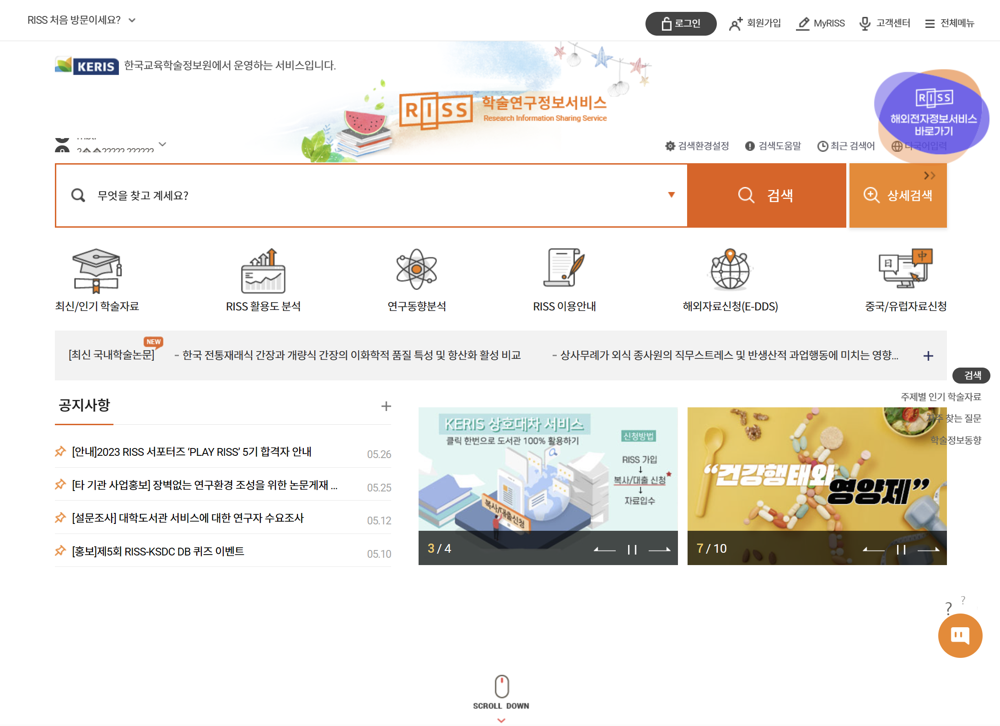
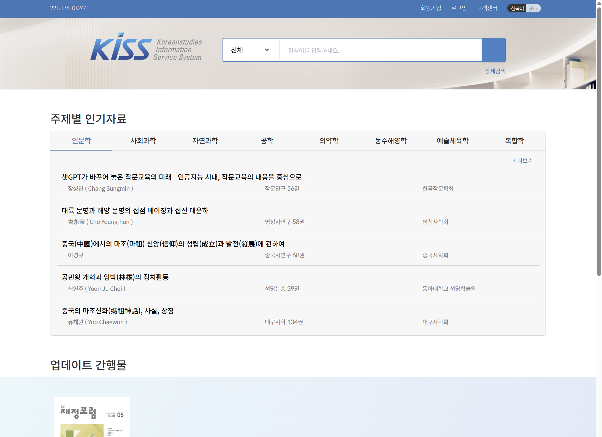
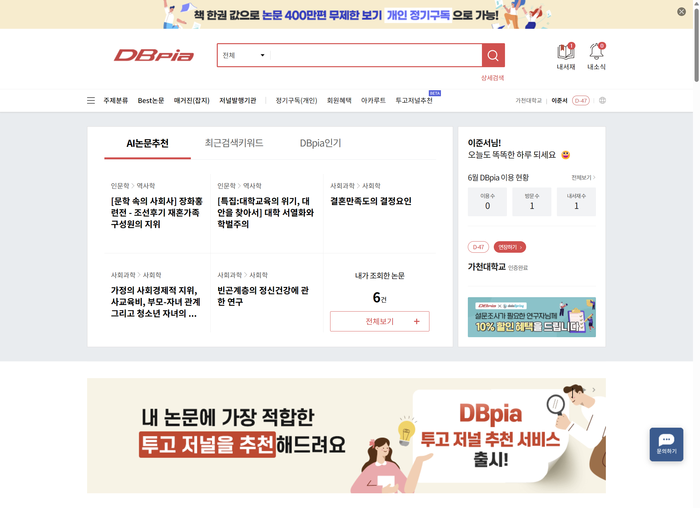
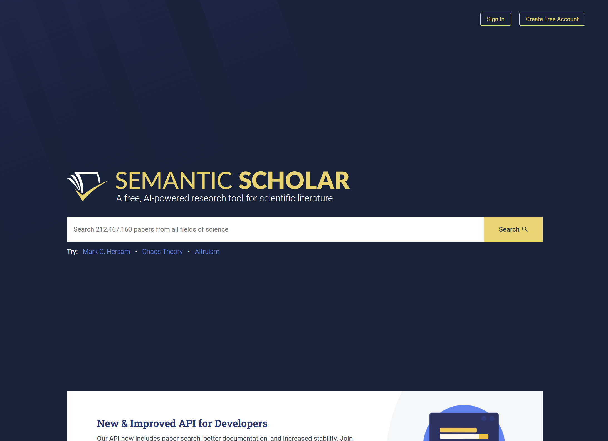

논문 자료 사이트
논문을 통한 전문지식을 얻을 수
있도록 도움을 주는 사이트

RISS
www.riss.kr
대학이 생산, 보유, 구독하는 모든 학술자원을 공통으로 이용할 수 있도록 개방된 학연구정보서비스 사이트이다.

KISS
kiss.kstudy.com
다양한 키워드의 논문을 제공하여 빠른 검색 및 인용이 가능한 한국학술정보서비스 사이트이다.

DBpia
www.dbpia.co.kr
학술지 이외에도 단행본, 자료, 잡지 등을 볼 수 있는 학술정보포털 사이트이다.

SEMANRIC SCHOLAR
www.semanticscholar.org
앨런인공지능연구소에서 개발된 논문 요약 서비스 사이트이다. 긴 논문을 간결한 핵심문장으로 압축해준다는 장점을 가지고있다.